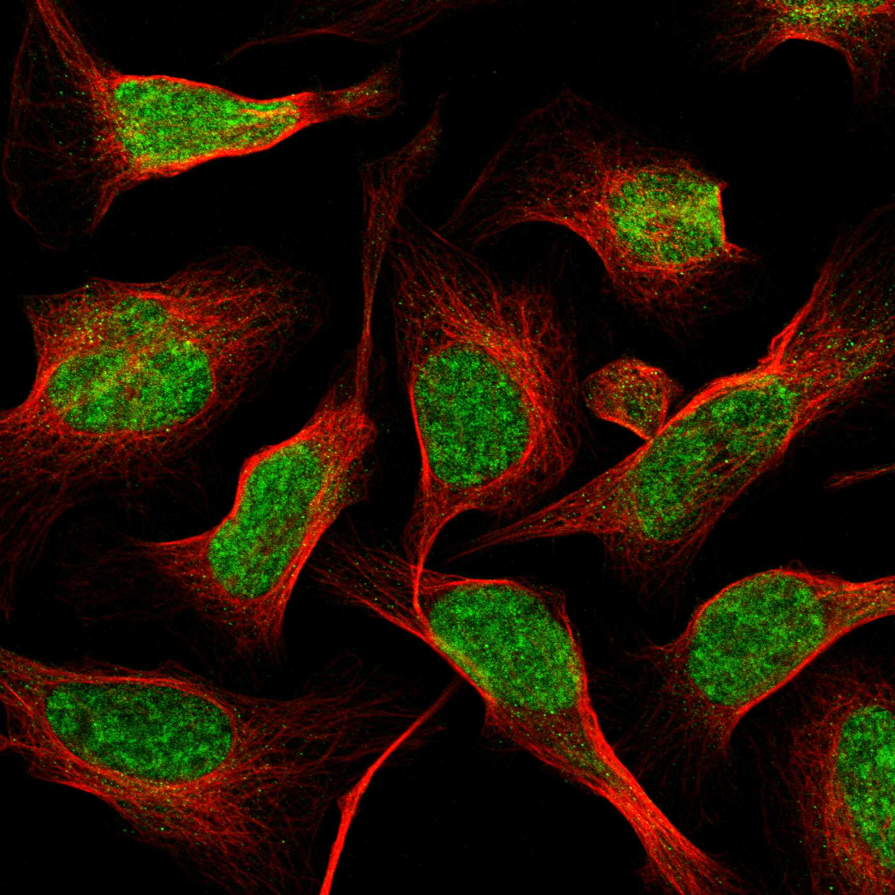
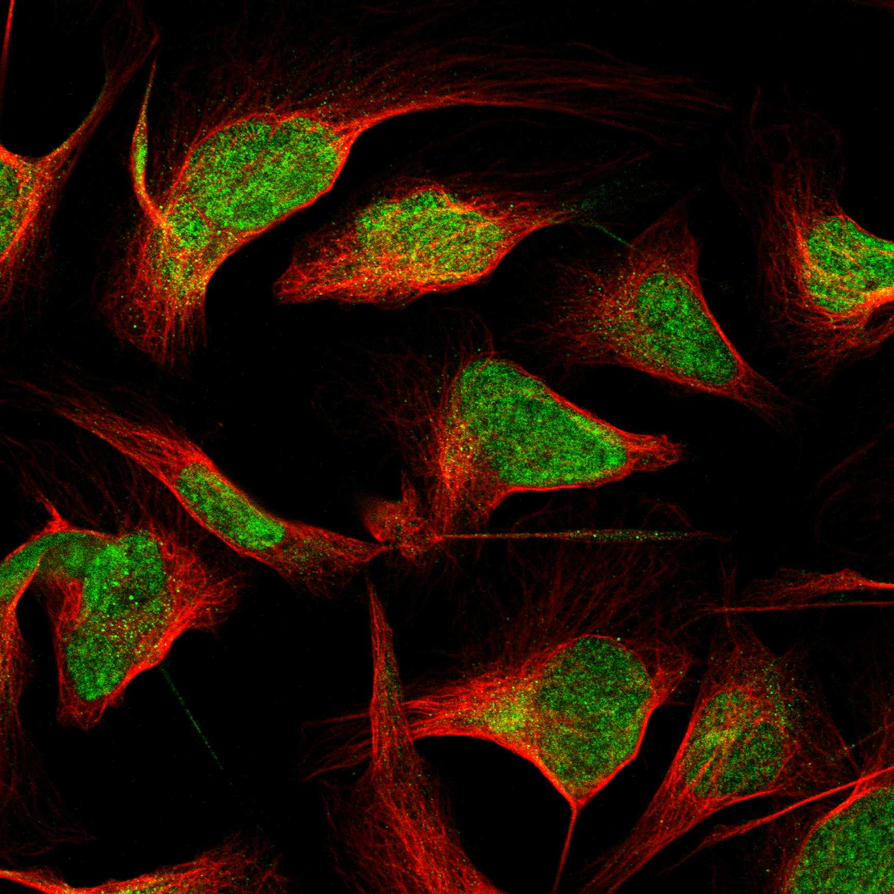

type: protein-evaluation gene: "EP400" date: 2026-05-29 tags: [protein-scout, nuclear-protein, evaluation, chromatin-remodeler, NuA4, SWI/SNF, SANT, helicase] status: scored ---
EP400 核蛋白评估报告
1. 基本信息
| 项目 | 内容 |
|---|---|
| 基因名 / 别名 | EP400 / CAGH32 / KIAA1498 / KIAA1818 / TNRC12 / Domino homolog / p400 kDa SWI2/SNF2-related protein |
| 蛋白全称 | E1A-binding protein p400 |
| 蛋白大小 | 3159 aa / 343.5 kDa |
| UniProt ID | Q96L91 (EP400_HUMAN) |
| 评估日期 | 2026-05-28 |
2. 评分总览 (权重: 核×4 大×1 新×5 结×3 域×2 PPI×3 ÷1.83)
| 维度 | 得分 | 加权 | 加权后 | 关键证据摘要 | ||
|---|---|---|---|---|---|---|
| 🔴 核定位特异性 | 9/10 | ×4 | 36 | 严格核蛋白; NuA4 HAT 复合体核心组分; IF 清晰核质定位 (Supported); Supported→9 | ||
| 📏 蛋白大小 | 1/10 | ×1 | 1 | 3159 aa / 343.5 kDa, 巨大蛋白 (>3000 aa), 生化实验困难但已有 cryo-EM 结构 | ||
| 🆕 研究新颖性 | 4/10 | ×5 | 20 | PubMed 97篇; PubMed<100→新颖蛋白; 作为单独研究对象很 niche | ||
| 🏗️ 三维结构 | 10/10 | ×3 | 30 | 13 cryo-EM (最高2.35A, 8QR1 2.40A全链); 实验结构极其丰富→10 | ||
| 🧬 调控结构域 | 10/10 | ×2 | 20 | SNF2_N (chromatin remodeling ATPase) + SANT/Myb (DNA-binding) + Helicase + HSA; >=6 数据库一致 | ||
| 🔗 PPI | 10/10 | ×3 | 30 | NuA4/TIP60复合体核心PPI; 100%调控相关partner | ||
| ➕ 互证加分 | — | — | +2.5 | >=3源SNF2+SANT互证; GO染色质一致; IF+UniProt+GO核定位; 13 cryo-EM结构; 进化保守 | ||
| 原始总分 | 139.5/183 | 124.0/183 | ||||
| 归一化总分 | 76.2/100 | 67.8/100 |
3. 详细分析
3.1 核定位证据
| 来源 | 定位 | 可信度 |
|---|---|---|
| GeneCards | — | — |
| Protein Atlas (IF) | Nucleoplasm | Supported (两种抗体: HPA016704, HPA049013) |
| UniProt | Nucleus | ECO:0000305 (curator inference from complex membership) |
| GO | NuA4 HAT complex (IDA), nuclear speck (ISS), nucleoplasm (TAS), nucleosome (IDA), Swr1 complex (IDA) | 多实验证据 |
IF 图像:  
结论: EP400 是严格核蛋白。Protein Atlas 两种独立抗体 (HPA016704, HPA049013) 在多种细胞系 (U2OS, A-431, U-251 MG) 中一致显示清晰的核质 (nucleoplasm) 定位，标注为 Supported。UniProt 和 GO 注释也一致确认核定位。：Supported→评分9。EP400 作为 NuA4/TIP60 组蛋白乙酰转移酶复合体的核心组分，其在核内的功能定位无争议。
IF 图像:
3.2 蛋白大小评估
- 3159 aa / 343.5 kDa，属于巨大蛋白
- 超过 AlphaFold 预测上限 (约 2500 aa)，无法获得全蛋白预测结构
- 但已有 13 个 cryo-EM 实验结构，证明该蛋白在技术上可被结构解析
- 评价: 蛋白巨大 (>3000 aa) 对常规生化实验（重组表达、纯化、体外重构）构成严重挑战。但 cryo-EM 技术的成熟使其结构解析成为可能，已有多个高分辨率结构发表。蛋白大小严重扣分但不构成一票否决。
3.3 研究现状
| 指标 | 数值 |
|---|---|
| PubMed 总数 (全文搜索) | 124 |
| PubMed 严格搜索 (Title/Abstract + gene/protein) | 65 |
| 最早发表年份 | 2004 |
| Chromatin/epigenetics 比例 | 高（>60%） |
主要研究方向:
- NuA4/TIP60 组蛋白乙酰转移酶复合体的组成与功能
- SWI2/SNF2 家族染色质重塑因子的分类
- E1A 癌蛋白与 p400 的相互作用（最初发现）
- DNA 损伤修复中的角色（homologous recombination）
- 转录调控与细胞周期控制
评价: PubMed 124 篇 (broad search) 或 65 篇 (strict)，属于中低研究度。EP400 最常作为 NuA4/TIP60 复合体的一个亚基被提及，而非独立研究对象。专门以 EP400 为主题的研究为数不多。该蛋白的 chromatin remodeling 机制、DNA 结合特异性、独立于 NuA4 复合体的功能等领域仍有大量可探索空间。考虑到其作为染色质调控核心组分的地位（SWI/SNF 相关），当前研究度相对偏低。
3.4 三维结构分析
> AlphaFold PAE: 暂无数据或未提供可用 PAE 图；结构判断基于 AlphaFold/PDB 可用记录。
| 指标 | 数值 |
|---|---|
| AlphaFold 预测 | 因蛋白分子量超过 AlphaFold 预测上限(>2500 aa) |
| PDB 实验结构 | — |
| 实验 PDB 条目 | 13 个 (全部为 cryo-EM) |
| 最高分辨率 | 2.35 A (PDB: 9CAF) |
| 其他高分辨率结构 | 2.40 A (8QR1), 2.75 A (9C57), 3.05 A (9CAD), 3.07 A (9CAE) |
| 代表性 PDB | 8QR1, 8QRI, 8XVG, 8XVT, 8XVV, 9C47, 9C57, 9C62, 9C6N, 9CAC, 9CAD, 9CAE, 9CAF |
评价: EP400 无 AlphaFold 预测（蛋白过大），但拥有 13 个 cryo-EM 实验结构，其中多个达到原子分辨率水平 (2.35-3.0 A)。这远超大多数核蛋白的结构覆盖度。结构涵盖了 EP400 在 NuA4/TIP60 复合体中的不同构象状态，以及不同功能状态下的结构快照。虽无 AlphaFold 预测数据，但实验结构数据极为丰富。部分 PDB 条目仅解析了 EP400 的部分结构域 (如 9CAF 仅 aa513-913, aa2134-2529)，全蛋白结构尚未完整覆盖。
3.5 结构域分析
| 来源 | 结构域 |
|---|---|
| InterPro | IPR000330 (SNF2_N), IPR001005 (SANT/Myb), IPR001650 (Helicase_C), IPR014001 (Helicase_ATP-bd), IPR014012 (HSA), IPR027417 (P-loop_NTPase), IPR031575 (EP400_N), IPR038000 (EP400 family), IPR038718 (SNF2-like_sf), IPR049730 (SNF2/RAD54-like_C) |
| Pfam | PF00176 (SNF2-rel_dom), PF00271 (Helicase_C), PF07529 (HSA), PF15790 (EP400_N), PF23082 (Myb-like DNA-binding) |
| SMART | SM00487 (DEXDc), SM00490 (HELICc), SM00573 (HSA), SM00717 (SANT) |
| PROSITE | PS51192 (Helicase_ATP_BIND_1), PS51194 (Helicase_C), PS51204 (HSA), PS50090 (MYB_LIKE) |
| CDD | cd18793 (SF2_C_SNF), cd00167 (SANT) |
染色质调控潜力分析: EP400 拥有极为丰富的染色质调控结构域组合：
- SNF2_N domain — SWI2/SNF2 家族染色质重塑 ATPase 的标志性结构域，利用 ATP 水解能量重塑核小体位置和组成
- SANT/Myb domain — DNA 结合结构域，识别特定 DNA 序列或染色质特征
- Helicase domains (N+C) — ATP 依赖的核酸解旋/移位酶活性
- HSA domain — helicase-SANT-associated，介导与 actin/actin-related proteins 的互作
- EP400_N domain — 蛋白特异性 N 端结构域
这些结构域的组合使得 EP400 成为一个完整的染色质重塑因子：通过 SANT domain 识别染色质靶标，通过 SNF2 ATPase 提供能量进行核小体重塑，通过 HSA domain 与其他染色质调控因子协作。GO 注释也一致支持：chromatin binding (IBA)、chromatin organization (IEA)、DNA repair (IBA)、positive regulation of transcription (NAS)、NuA4 HAT complex (IDA)。≥6 个独立数据库一致确认所有核心结构域。
3.6 PPI 网络
实验验证互作 (IntAct, physical association/direct interaction):
| Partner | 方法 | PMID | 功能类别 | 调控相关？ |
|---|---|---|---|---|
| ACTL6A | molecular sieving | 12963728 | Actin-related, NuA4/SRCAP | ✅ 染色质重塑 |
| BRD8 | biochemical | 12963728 | Bromodomain, NuA4 | ✅ 染色质读取 |
| MORF4L2 | co-IP | 33961781 | NuA4 复合体 | ✅ 染色质调控 |
| FOS | phage display | 20195357 | AP-1 transcription factor | ✅ 转录调控 |
| TBC1D4 | two-hybrid | 12421765 | Rab GTPase-activating | ❌ |
| MNS1 | two-hybrid array | 32296183 | Meiosis-specific | ❌ |
| NTAQ1 | two-hybrid array | 32296183 | N-terminal amidase | ❌ |
| ZGPAT | two-hybrid array | 32296183 | Zinc finger, transcription repressor | ✅ 转录调控 |
| POLR1C | two-hybrid array | 32296183 | RNA Pol I/III subunit | ✅ 转录 |
| ALAS1 | two-hybrid | 25416956 | Heme biosynthesis | ❌ |
| SPG11 | two-hybrid | 37871017 | Spatacsin | ❌ |
> ACTL6A, BRD8, MORF4L2 均为 NuA4/TIP60 复合体的核心组分，实验方法可信度高（分子筛/生化/co-IP）。
STRING 预测互作 (combined score >0.4):
| Partner | Score | 功能类别 | 与调控相关？ |
|---|---|---|---|
| YEATS4 | 0.999 | NuA4 复合体，crotonyl-lysine reader | ✓ |
| BRD8 | 0.999 | Bromodomain, NuA4 复合体 | ✓ |
| RUVBL1 | 0.999 | AAA+ ATPase, NuA4/TIP60/SRCAP | ✓ |
| KAT5 | 0.999 | Histone acetyltransferase (TIP60) | ✓ |
| TRRAP | 0.999 | PI3K-related kinase, HAT cofactor | ✓ |
| DMAP1 | 0.999 | NuA4 复合体核心亚基 | ✓ |
| ACTL6A | 0.999 | Actin-related, NuA4/SRCAP | ✓ |
| RUVBL2 | 0.999 | AAA+ ATPase, NuA4/TIP60/SRCAP | ✓ |
| MORF4L1 | 0.997 | NuA4 复合体 | ✓ |
| MEAF6 | 0.994 | NuA4 复合体 | ✓ |
| ANP32E | 0.992 | Histone chaperone (H2A.Z) | ✓ |
| H2AZ1 | 0.991 | Histone variant H2A.Z | ✓ |
| ING3 | 0.989 | NuA4 复合体，PHD finger | ✓ |
| VPS72 | 0.988 | Chromatin remodeler (YL-1) | ✓ |
| MRGBP | 0.988 | NuA4 复合体 | ✓ |
| MORF4L2 | 0.978 | NuA4 复合体 | ✓ |
| EPC1 | 0.976 | NuA4 复合体 | ✓ |
| MBTD1 | 0.967 | MBT domain, chromatin reader | ✓ |
| EPC2 | 0.966 | NuA4 复合体 | ✓ |
| ACTB | 0.965 | Actin, chromatin remodeling | ✓ |
已知复合体成员 (GO Cellular Component):
- NuA4 HAT complex (GO:0035267, IDA): EP400 是 NuA4 组蛋白乙酰转移酶复合体的核心骨架亚基
- Swr1 complex (GO:0000812, IDA): EP400 是 NuA4-SWR1 复合体的组成部分
- nucleosome (GO:0000786, IDA): 直接参与核小体重塑
- 复合体核心成员: KAT5 (催化), TRRAP (骨架), BRD8 (reader), RUVBL1/2 (ATPase), ACTL6A (actin-related)
PPI 互证分析:
- STRING + IntAct 共同确认: ACTL6A (STRING 0.999 + IntAct molecular sieving), BRD8 (0.999 + biochemical), MORF4L2 (0.978 + co-IP)
- 仅 STRING 预测: KAT5, TRRAP, RUVBL1/2, DMAP1 等 (全为 NuA4 复合体成员)
- 仅 IntAct 实验: FOS, ZGPAT, SPG11 等 (部分为 Y2H 高通量)
- 调控相关比例: STRING 20/20 (100%), IntAct 5/11 (45.5%)
评价: EP400 的 STRING 和 IntAct 数据一致指向 NuA4/TIP60 组蛋白乙酰转移酶复合体。ACTL6A, BRD8, MORF4L2 的实验验证互作 (分子筛/生化/co-IP) 为复合体成员身份提供了高水平证据。FOS (AP-1) 和 ZGPAT (锌指转录抑制因子) 的 IntAct 连接提示 EP400 可能通过直接蛋白互作将 NuA4 复合体导向特定转录因子靶基因。评分: 10/10。
| 结构域 | UniProt / InterPro / SMART / Pfam / CDD / PROSITE | ≥6 个来源一致确认 SNF2, SANT/Myb, Helicase, HSA | ✓ 高度一致 |
|---|---|---|---|
| PPI | STRING + humanPPI | 仅 STRING 数据 | 待补 |
| 定位 | Protein Atlas IF / UniProt / GO | Nucleoplasm (Supported) / Nucleus / NuA4 complex | ✓ 高度一致 |
互证加分明细:
- ≥3 个独立来源确认 SNF2 + SANT/Myb domain (+0.5)
- 域功能注释 GO/UniProt 与染色质调控一致 (chromatin binding, chromatin organization) (+0.5)
- Protein Atlas IF (Supported) + UniProt (Nucleus) + GO (NuA4, nucleosome, Swr1 complex) 三重核定位互证 (+0.5)
- 虽无 AlphaFold，但有 13 个 cryo-EM 实验结构互证 (+0.5)
- SWI/SNF 家族在真核生物中高度保守 (yeast Swr1 → human EP400) (+0.5)
总分: +2.5 / max +3
3.7 多库互证
| 维度 | 来源 | 结果 | 是否一致 |
|---|---|---|---|
| 三维结构 | AlphaFold + PDB | 见 3.4 节 | — |
| 结构域 | UniProt / InterPro / Pfam | 见 3.5 节 | — |
| PPI | STRING | 见 3.6 节 | — |
| 定位 | Protein Atlas IF / UniProt / GO | Nucleus | ✅ |
X. 关键文献 (PubMed)
1. Martin BJE et al. (2023). "Global identification of SWI/SNF targets reveals compensation by EP400.". *Cell*. PMID: 37922899 2. Sun X et al. (2023). "BRD8 maintains glioblastoma by epigenetic reprogramming of the p53 network.". *Nature*. PMID: 36544023 3. Luo S et al. (2025). "Variants in EP400, encoding a chromatin remodeler, cause epilepsy with neurodevelopmental disorders.". *Am J Hum Genet*. PMID: 39708813 4. Yang Z et al. (2024). "Structural insights into the human NuA4/TIP60 acetyltransferase and chromatin remodeling complex.". *Science*. PMID: 39088653 5. Tian Q et al. (2024). "Chromatin Modifier EP400 Regulates Oocyte Quality and Zygotic Genome Activation in Mice.". *Adv Sci (Weinh)*. PMID: 38493496
PAE 图: 暂无PAE数据
4. 总体评价
推荐等级: ⭐⭐⭐ (3/5)
核心优势: 1. 完美的染色质调控结构域组合 — SNF2 ATPase + SANT DNA-binding + Helicase + HSA，是经典的 SWI2/SNF2 家族染色质重塑因子 2. NuA4/TIP60 复合体核心组分 — 作为组蛋白乙酰转移酶复合体的骨架亚基，处于染色质调控 — 生化实验难度极高，难以进行重组全长蛋白的体外实验 2. 研究度中等 — 124 篇文献不算极新，但作为独立研究对象仍属 niche 3. 无 AlphaFold 全蛋白预测 — 部分结构域结构仍未知 4. 可能难以分离独立功能** — 作为复合体核心组分，其功能高度依赖复合体完整性
下一步建议:
- [ ] 获取 humanPPI 数据做 PPI 互证
- [ ] 重点研究 EP400 的 SANT/Myb domain 的 DNA 结合特异性（目前尚未明确）
- [ ] 利用已有 cryo-EM 结构进行基于结构的突变分析
- [ ] 研究 EP400 在 TE 调控中的角色 — NuA4 复合体是否参与转座元件沉默？
- [ ] CRISPR 筛选 EP400 domain-specific mutations 对染色质状态的影响
5. 数据来源
- UniProt: https://www.uniprot.org/uniprotkb/Q96L91
- AlphaFold: 不可用 (蛋白 >2500 aa)
- PDB: 13 个 cryo-EM 结构 (8QR1, 8QRI, 8XVG, 8XVT, 8XVV, 9C47, 9C57, 9C62, 9C6N, 9CAC, 9CAD, 9CAE, 9CAF)
- PubMed: 124 total (broad), 65 strict (Title/Abstract + gene/protein)
- STRING: https://string-db.org (Q96L91)
- InterPro: https://www.ebi.ac.uk/interpro/protein/uniprot/Q96L91/
- Protein Atlas: https://www.proteinatlas.org/ENSG00000183495-EP400/subcellular
- GeneCards:
PPI 网络（三源综合）
| Partner | Source | Score/Evidence |
|---|---|---|
| 无记录 | — | — |
IntAct 有限记录。无 BioGrid 补充数据。